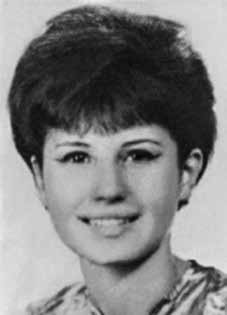

Sônia
Maria
de Moraes
Angel
Jones
CIRCUNSTÂNCIAS DA MORTE
Sônia e Antônio Carlos eram monitorados pelos órgãos de segurança desde que haviam se mudado para São Vicente. Segundo apresentação do caso em audiência pública, realizada em parceria com a Comissão Rubens Paiva, o casal foi vigiado por agentes que se infiltraram no prédio onde viviam, passando-se por funcionários do condomínio. Foi por meio da atuação do agente infiltrado conhecido como “Jota”, cujo nome verdadeiro é João Henrique Ferreira de Carvalho, que os dois militantes foram reconhecidos e capturados. Em uma manhã do mês de novembro de 1973, Sônia e Antônio Carlos saíram de casa para tomar um ônibus no posto rodoviário do Canal 1, com destino à cidade de São Paulo. Quando entraram no veículo, o ônibus já estava ocupado por diversos agentes. Antônio Carlos foi abordado quando desceu para pagar as passagens, e Sônia foi capturada dentro do ônibus e levada para fora do veículo. Segundo testemunhas, a militante foi algemada pelos pés. Os dois foram encaminhados, em carros diferentes, para o DOI-CODI do II Exército, em São Paulo (SP). Há duas versões sobre os fatos subsequentes à prisão de Sônia. Segundo informações prestadas à família pelo coronel Canrobert Lopes da Costa, ex-comandante do DOICODI de Brasília e primo de João Luiz de Moraes, Sônia, depois de presa em São Paulo, teria sido requisitada por agentes do DOI-CODI do I Exército, no Rio de Janeiro, onde ela teria “contas a acertar”. Segundo mesmo relato, Sônia teria permanecido por 48 horas no local, onde teria sido torturada e estuprada com o uso de um cassetete, o que teria provocado hemorragia interna. Debilitada, Sônia teria sido então encaminhada de volta ao DOI-CODI/SP e executada depois de torturas que incluíram o decepamento de seus seios. Segundo relato do pai de Sônia, João Luiz de Moraes, o cassetete que teria sido utilizado na tortura da filha foi depois enviado à família pelo coronel Adyr Fiúza de Castro, então comandante do DOI-CODI/RJ. O mesmo coronel foi elogiado em 1º de julho de 1974 por um colega de Exército, como consta de sua folha de alterações: […] Realizou, também, com notável descortino e paciência, trabalho de persuasão de inúmeros jovens presos por atividades atentatórias à Segurança Nacional, a cujas famílias tranquilizou, assegurando, com a sinceridade de suas atitudes, a certeza de um tratamento digno, humano e justo.i A segunda versão sobre a morte de Sônia foi relatada pelo ex-sargento do Exército Marival Chaves Dias do Canto, que, em entrevista à revista Veja, de 18 de novembro de 1982, informou que Sônia e Antônio Carlos teriam sido levados para um centro clandestino de detenção, onde teriam permanecido por até 10 dias e morrido sob tortura. Em depoimento à CNV, prestado em 21 de novembro de 2012, Marival se referiu àquele centro de torturas como “o sítio da Serra do Mar”, cujo proprietário seria um empresário paulista do ramo de transportes.ii Conforme declaração de 10 de maio de 2013, o exsargento indicou que o responsável pela equipe de investigação, que teria prendido e encaminhado Sônia ao sítio da Serra do Mar foi o subtenente Roberto Artoni.iii Em depoimento anterior de Marival à CNV, prestado em 30 de outubro de 2012, Sônia e Antônio teriam sido interrogados e mortos no local, assassinados por meio de prática que o agente chamou de “tiro ao alvo” e, em seguida, novamente levados ao DOICODI/SP, onde seus corpos teriam sido exibidos como “troféus”. Segundo o ex-agente, “o [cadáver] de Sônia e do companheiro dela, Antônio Carlos Bicalho Lana, foi exposto à visitação do pessoal do DOI. […] O que foi sintomático e muito nítido, as perfurações no ouvido, na testa, na face dos dois. […] A ideia do tiro ao alvo”.iv Depoimento de testemunha, prestado sob sigilo à CNV, revelou possíveis novas informações acerca das circunstâncias da morte de Sônia. Segundo a depoente, que optou por não revelar sua identidade, Sônia teria sido de fato levada até um centro clandestino, que estaria localizado na zona sul da cidade de São Paulo. Nesse imóvel, relatou ter testemunhado a morte de Sônia sob brutais torturas praticadas pela equipe de Lourival Gaeta. Em 1º de dezembro de 1973, os jornais O Globo e o Estado de S.Paulo reproduziram a falsa versão sobre a morte dos militantes, divulgada pelos órgãos de segurança: Sônia e Antônio teriam morrido em tiroteio com “agentes dos órgãos responsáveis pela segurança interna”, na Rua Pinedo, localizada na região de Santo Amaro, na Zona Sul de São Paulo (SP). As notícias referiam-se à Sônia pelo codinome Esmeralda, enquanto Antônio Carlos era tratado pelo nome verdadeiro. Ambos teriam sido alvejados em um tiroteio com “agentes dos órgãos responsáveis pela segurança interna”, em uma via do bairro de Santo Amaro, em São Paulo (SP) e morrido a caminho do hospital. A falsa versão das mortes foi corroborada por laudo necroscópico, datado de 5 de dezembro de 1974 e assinado pelos médicos legistas Harry Shibata e Antônio Valentini. O documento atesta que Sônia faleceu em consequência “de traumatismo craniano por ferimento transfixante por projétil de arma de fogo”.v Sônia foi enterrada como indigente no cemitério de Perus, em São Paulo (SP), com o registro de sepultamento assentado com seu codinome na ALN, Esmeralda Siqueira Aguiar. A família, no entanto, tinha conhecimento do codinome e, por isso, buscou os órgãos da repressão na tentativa de esclarecer o que havia ocorrido. Os familiares viajaram até São Vicente e, quando chegaram ao apartamento de Sônia e Antônio Carlos, foram surpreendidos por oficias à paisana, que agrediram o pai de Sônia, João Luiz de Moraes, quando ele se recusou a mostrar seu documento de identidade. Os pais de Sônia ficaram ainda detidos em um hotel na cidade de São Paulo, à disposição das forças de segurança. Posteriormente levado ao DOI-CODI/SP, João Luiz reconheceu no local alguns objetos que pertenciam à filha. Algumas circunstâncias reforçam a ação deliberada dos órgãos de repressão na ocultação do cadáver de Sônia. Enquanto a certidão de óbito foi registrada com nome falso, o Laudo de Exame Necroscópico encontra-se lavrado com a identidade verdadeira da vítima. Apesar de saber que o corpo pertencia a Sônia, os órgãos de repressão a sepultaram com nome falso e como indigente no Cemitério de Perus. Em 1981 foi possível trasladar para o Rio de Janeiro os restos mortais sepultados no cemitério de Perus e identificados com o nome de guerra da militante. Revelou-se, no entanto, por meio de exame realizado no ano seguinte, que o corpo pertencia a uma pessoa do sexo masculino. A família só conseguiu recuperar, de fato, os restos mortais de Sônia dez anos depois, em 1991. Após seis exumações, foram localizadas as ossadas pertencentes a Sônia, como comprovado a partir de exames periciais realizados pela Universidade Estadual de Campinas (UNICAMP). Sônia foi sepultada em 12 de agosto de 1991, no cemitério Jardim da Saudade, no Rio de Janeiro (RJ). Naquela ocasião, seu pai a homenageou com as seguintes palavras, publicadas no livro sobre a vida de Sônia: Soninha, este é o ato final do teu sepultamento. Recebes finalmente a sepultura imposta pela tradição cristã; uma sepultura simples e despojada como simples e despojada foi a tua curta vida. Aqui estaremos sempre, lembrando de ti, trazendo uma flor como reconhecimento; em homenagem à filha, à esposa, à companheira e à guerrilheira que, procurando transformar o Brasil de modo a diminuir as carências de seu povo, entregou seu corpo, sua alma e seu sangue generoso à sanha dos canalhas que comandaram esse país a partir de 1964. Descanse em paz, Sônia Maria.
Sônia and Antônio Carlos were monitored by security agencies since they moved to São Vicente. According to the presentation of the case at a public hearing, carried out in partnership with the Rubens Paiva Commission, the couple was monitored by agents who infiltrated the building where they lived, posing as condominium employees. It was through the actions of the undercover agent known as “Jota”, whose real name is João Henrique Ferreira de Carvalho, that the two militants were recognized and captured. One morning in November 1973, Sônia and Antônio Carlos left home to catch a bus at the Canal 1 bus station, heading to the city of São Paulo. When they got into the vehicle, the bus was already occupied by several agents. Antônio Carlos was approached when he got off to pay for his tickets, and Sônia was captured inside the bus and taken out of the vehicle. According to witnesses, the activist was handcuffed by her feet. The two were taken, in different cars, to the DOI-CODI of the II Army, in São Paulo (SP). There are two versions of the events following Sônia's arrest. According to information provided to the family by Colonel Canrobert Lopes da Costa, former commander of DOICODI in Brasília and cousin of João Luiz de Moraes, Sônia, after being arrested in São Paulo, would have been requested by DOI-CODI agents of the 1st Army, in Rio de Janeiro, where she would have “a score to settle”. According to the same report, Sônia would have remained there for 48 hours, where she would have been tortured and raped with the use of a baton, which would have caused internal bleeding. Weakened, Sônia was then sent back to DOI-CODI/SP and executed after torture that included the cutting off of her breasts. According to a report by Sônia's father, João Luiz de Moraes, the baton that would have been used to torture his daughter was later sent to the family by Colonel Adyr Fiúza de Castro, then commander of DOI-CODI/RJ. The same colonel was praised on July 1, 1974 by an Army colleague, as stated in his change sheet: [...] He also carried out, with remarkable insight and patience, the work of persuasion of countless young people arrested for activities undermining National Security, whose families he reassured, assuring, with the sincerity of his attitudes, the certainty of dignified, humane and fair treatment.i The second version about Sônia's death was reported by the former Army sergeant Marival Chaves Dias do Canto, who, in an interview with Veja magazine, on November 18, 1982, reported that Sônia and Antônio Carlos had been taken to a clandestine detention center, where they would have remained for up to 10 days and died under torture. In a statement to the CNV, given on November 21, 2012, Marival referred to that torture center as “the Serra do Mar site”, whose owner was a São Paulo businessman in the transport sector. CNV, provided on October 30, 2012, Sônia and Antônio would have been interrogated and killed on the spot, murdered through what the agent called “target shooting” and then taken again to DOICODI/SP, where their bodies would have been displayed as “trophies”. According to the former agent, “the [corpse] of Sônia and her companion, Antônio Carlos Bicalho Lana, was exposed to visitation by DOI staff. […] What was symptomatic and very clear, the perforations in the ear, on the forehead, on the face of both of them. […] The idea of target shooting”.iv Witness testimony, given under secrecy to the CNV, revealed possible new information about the circumstances of Sônia's death. According to the deponent, who chose not to reveal her identity, Sônia had in fact been taken to a clandestine center, which would have been located in the south zone of the city of São Paulo. In that property, he reported having witnessed Sônia's death under brutal torture carried out by Lourival Gaeta's team. On December 1, 1973, the newspapers O Globo and Estado de S.Paulo reproduced the false version about the death of the militants, published by the security agencies: Sônia and Antônio had died in a shootout with “agents from the agencies responsible for internal security”, on Rua Pinedo, located in the Santo Amaro region, in the South Zone of São Paulo (SP). The news referred to Sônia by the codename Esmeralda, while Antônio Carlos was addressed by his real name. Both were allegedly shot in a shootout with “agents from the bodies responsible for internal security”, on a road in the Santo Amaro neighborhood, in São Paulo (SP) and died on the way to the hospital. The false version of the deaths was corroborated by a necroscopic report, dated December 5, 1974 and signed by coroners Harry Shibata and Antônio Valentini. The document attests that Sônia died as a result of “head trauma caused by a transfixing wound caused by a firearm projectile”. The family, however, was aware of the code name and, therefore, sought out the repression agencies in an attempt to clarify what had happened. The family members traveled to São Vicente and, when they arrived at Sônia and Antônio Carlos' apartment, they were surprised by plainclothes officers, who attacked Sônia's father, João Luiz de Moraes, when he refused to show his identity document. Sônia's parents were also detained in a hotel in the city of São Paulo, at the disposal of the security forces. Later taken to DOI-CODI/SP, João Luiz recognized some objects at the scene that belonged to his daughter. Some circumstances reinforce the deliberate action of the repression bodies in hiding Sônia's corpse. While the death certificate was registered under a false name, the Necroscopic Examination Report is drawn up with the victim's true identity. Despite knowing that the body belonged to Sônia, the repression agencies buried her under a false name and as a pauper in the Perus Cemetery. In 1981, it was possible to transfer to Rio de Janeiro the remains buried in the Perus cemetery and identified with the militant's nom de guerre. However, an examination carried out the following year revealed that the body belonged to a male person. The family only managed to actually recover Sônia's remains ten years later, in 1991. After six exhumations, the bones belonging to Sônia were located, as proven by expert examinations carried out by the State University of Campinas (UNICAMP). Sônia was buried on August 12, 1991, in the Jardim da Saudade cemetery, in Rio de Janeiro (RJ). On that occasion, her father honored her with the following words, published in the book about Sônia's life: Soninha, this is the final act of your burial. You finally receive the burial imposed by Christian tradition; a simple and bare grave as simple and bare was your short life. Here we will always be, remembering you, bringing a flower as recognition; in honor of the daughter, the wife, the companion and the guerrilla fighter who, seeking to transform Brazil in order to reduce the needs of its people, gave her body, her soul and her generous blood to the wrath of the scoundrels who ruled this country from 1964 onwards. Rest in peace, Sônia Maria.
Sônia y Antônio Carlos fueron vigilados por organismos de seguridad desde que se trasladaron a São Vicente. Según la presentación del caso en una audiencia pública, realizada en colaboración con la Comisión Rubens Paiva, la pareja fue vigilada por agentes que se infiltraron en el edificio donde vivían, haciéndose pasar por empleados del condominio. Fue gracias a la actuación del agente encubierto conocido como “Jota”, cuyo verdadero nombre es João Henrique Ferreira de Carvalho, que los dos militantes fueron reconocidos y capturados. Una mañana de noviembre de 1973, Sônia y Antônio Carlos salieron de su casa para tomar un autobús en la estación de autobuses del Canal 1, rumbo a la ciudad de São Paulo. Cuando subieron al vehículo, el autobús ya estaba ocupado por varios agentes. Antônio Carlos fue abordado cuando bajaba para pagar sus pasajes y Sônia fue capturada dentro del autobús y sacada del vehículo. Según testigos, la activista estaba esposada de los pies. Los dos fueron trasladados, en vehículos diferentes, al DOI-CODI del II Ejército, en São Paulo (SP). Hay dos versiones sobre los hechos que siguieron a la detención de Sônia. Según información proporcionada a la familia por el coronel Canrobert Lopes da Costa, ex comandante del DOICODI en Brasilia y primo de João Luiz de Moraes, Sônia, después de ser detenida en São Paulo, habría sido solicitada por agentes del DOI-CODI del 1.º Ejército, en Río de Janeiro, donde tendría “una cuenta que saldar”. Según el mismo informe, Sônia habría permanecido allí durante 48 horas, donde habría sido torturada y violada con el uso de una porra, lo que le habría provocado una hemorragia interna. Debilitada, Sônia fue enviada de regreso al DOI-CODI/SP y ejecutada después de torturas que incluyeron la amputación de sus senos. Según un informe del padre de Sônia, João Luiz de Moraes, el bastón que habría sido utilizado para torturar a su hija fue enviado posteriormente a la familia por el coronel Adyr Fiúza de Castro, entonces comandante del DOI-CODI/RJ. El mismo coronel fue elogiado el 1 de julio de 1974 por un colega del Ejército, como consta en su hoja de cambios: [...] También llevó a cabo, con notable perspicacia y paciencia, la labor de persuasión de innumerables jóvenes detenidos por actividades que atentaban contra la Seguridad Nacional, a cuyas familias tranquilizó, asegurando, con la sinceridad de sus actitudes, la certeza de un trato digno, humano y justo.i La segunda versión sobre la muerte de Sônia fue relatada por el ex sargento del Ejército. Marival Chaves Dias do Canto, quien, en entrevista con la revista Veja, el 18 de noviembre de 1982, informó que Sônia y Antônio Carlos habían sido llevados a un centro clandestino de detención, donde habrían permanecido hasta 10 días y habrían muerto bajo tortura. En declaración ante la CNV, dada el 21 de noviembre de 2012, Marival se refirió a ese centro de tortura como “el sitio de la Serra do Mar”, cuyo propietario era un empresario paulista del sector del transporte. CNV, proporcionada el 30 de octubre de 2012, Sônia y Antônio habrían sido interrogados y asesinados en el acto, asesinados mediante lo que el agente llamó “tiro al blanco” y luego llevados nuevamente a DOICODI/SP, donde sus cuerpos habrían sido exhibidos como “trofeos”. Según el ex agente, “el [cadáver] de Sônia y de su acompañante, Antônio Carlos Bicalho Lana, estuvo expuesto a visitas de personal del DOI. […] Lo que fue sintomático y muy claro, las perforaciones en la oreja, en la frente, en el rostro de ambos. […] La idea del tiro al blanco”.iv Los testimonios de los testigos, prestados bajo secreto a la CNV, revelaron posibles nuevas informaciones sobre las circunstancias de la muerte de Sônia. Según la declarante, que optó por no revelar su identidad, Sônia habría sido llevada a un centro clandestino, que estaría ubicado en la zona sur de la ciudad de São Paulo. En ese inmueble, relató haber presenciado la muerte de Sônia bajo brutales torturas realizadas por el equipo de Lourival Gaeta. El 1 de diciembre de 1973, los periódicos O Globo y Estado de S.Paulo reprodujeron la versión falsa sobre la muerte de los militantes, publicada por los organismos de seguridad: Sônia y Antônio habían muerto en un tiroteo con “agentes de los organismos responsables de la seguridad interior”, en la Rua Pinedo, ubicada en la región de Santo Amaro, en la Zona Sur de São Paulo (SP). La noticia se refería a Sônia por el nombre clave de Esmeralda, mientras que Antônio Carlos era llamado por su nombre real. Ambos habrían sido baleados en un tiroteo con “agentes de los órganos responsables de la seguridad interior”, en una vía del barrio de Santo Amaro, en São Paulo (SP), y murieron camino al hospital. La versión falsa de las muertes fue corroborada por un informe necroscópico, fechado el 5 de diciembre de 1974 y firmado por los forenses Harry Shibata y Antônio Valentini. El documento constata que Sônia murió como consecuencia de un “traumatismo craneoencefálico provocado por una herida traspasante provocada por un proyectil de arma de fuego”. La familia, sin embargo, conocía el nombre en clave y, por ello, acudió a los organismos de represión en un intento de esclarecer lo sucedido. Los familiares viajaron a São Vicente y, al llegar al apartamento de Sônia y Antônio Carlos, fueron sorprendidos por agentes vestidos de civil, que atacaron al padre de Sônia, João Luiz de Moraes, cuando se negó a mostrar su documento de identidad. Los padres de Sônia también fueron detenidos en un hotel de la ciudad de São Paulo, a disposición de las fuerzas de seguridad. Posteriormente, llevado al DOI-CODI/SP, João Luiz reconoció en el lugar algunos objetos que pertenecían a su hija. Algunas circunstancias refuerzan la acción deliberada de los órganos de represión al ocultar el cadáver de Sônia. Si bien el certificado de defunción fue registrado con un nombre falso, el Informe de Examen Necroscópico se elabora con la verdadera identidad de la víctima. A pesar de saber que el cuerpo pertenecía a Sônia, los organismos de represión la enterraron con un nombre falso y como indigente en el Cementerio de Perus. En 1981 se logró trasladar a Río de Janeiro los restos enterrados en el cementerio de Perus e identificados con el nombre de guerra del militante. Sin embargo, un examen realizado al año siguiente reveló que el cuerpo pertenecía a un hombre. La familia sólo logró recuperar los restos de Sônia diez años después, en 1991. Después de seis exhumaciones, se localizaron los huesos de Sônia, como lo demuestran los peritajes realizados por la Universidad Estadual de Campinas (Unicamp). Sônia fue enterrada el 12 de agosto de 1991, en el cementerio Jardim da Saudade, en Río de Janeiro (RJ). En aquella ocasión, su padre la honró con las siguientes palabras, publicadas en el libro sobre la vida de Sônia: Soninha, este es el acto final de tu entierro. Recibes finalmente el entierro impuesto por la tradición cristiana; una tumba sencilla y desnuda, como sencilla y desnuda fue tu corta vida. Aquí estaremos siempre, recordándote, trayendo una flor como reconocimiento; en honor a la hija, la esposa, la compañera y la guerrillera que, buscando transformar Brasil para reducir las necesidades de su pueblo, entregó su cuerpo, su alma y su sangre generosa a la ira de los sinvergüenzas que gobernaron este país desde 1964 en adelante. Descansa en paz, Sônia María.